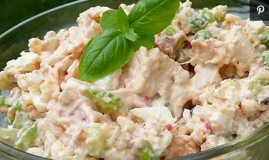

Rice Salads

Descriptions
THis rice salad is a great summer
salad in place of potato salad,
or any time of year!
Ingredients
- 2 cups water
- 1 cup white rice
- 6 eggs
- 1 (10 ounce) package frozen peas, thawed
- 1 cup chopped celery
- ¼ cup chopped onion
- 1 (4 ounce) jar diced pimento
- 1 cup mayonnaise
- 1 teaspoon prepared mustard
- 1 tablespoon lemon juice
- ¼ cup sweet pickle relish
- 1 (9 ounce) can solid white tuna packed in water, drained
- ¼ teaspoon dried dill weed
- 1 teaspoon salt
- ⅛ teaspoon pepper
Steps
- In a saucepan bring water to a
boil. Add rice and stir. Reduce
heat, cover and simmer for 20
minutes. Remove from heat, and
set aside to cool.
- Place eggs in a saucepan and
cover with cold water. Bring
to a boil and immediately remove
from heat. Cover and let eggs
stand in hot water for 10 to 12
minutes. Remove from hot water,
cool, peel and chop.
- Rinse frozen peas under cold water.
Strain, and place in a large mixing
bowl. Add eggs, rice, celery, onions,
and pimiento; toss to combine, and set
aside. In a separate bowl, stir the
mayonnaise together with mustard, lemon
juice, relish, tuna, dill, salt, and pepper
until well blended. Add to the vegetable
mixture, and toss to combine. Cover, and
refrigerate for a minimum of 4 hours. Toss
once more before serving. Serve chilled.